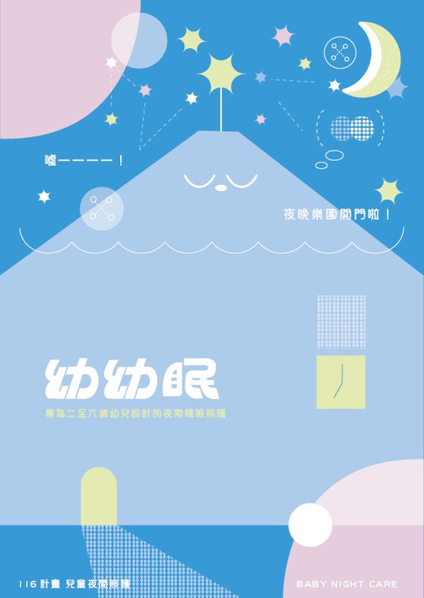
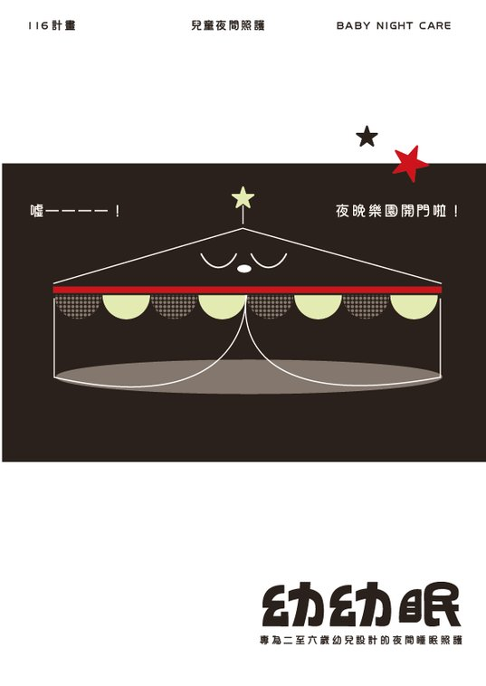

THE WORLD OF 幼幼眠
噓——！
夜晚樂園開門啦！
當城市的爸媽出門上夜班，幼幼眠就悄悄亮起燈。這是一座只在夜晚開門、專為 2–6 歲孩子打造的樂園——在這裡玩夠了，就好好睡一覺。


樂園的一夜
17:00 開園
拿到入園證明
和爸媽說好再見，蓋上今晚的入園章。集滿可以換一隻盲盒夥伴。
18:00 遊樂時光
選一座設施
四座夜晚設施各有任務，完成任務就離夢鄉更近一步。
20:00 熄燈儀式
噓——樂園要睡了
燈一盞一盞暗下，跟著睡眠五步驟，和樂園一起進入夢鄉。
7:00 晨光閉園
天亮了，爸媽來了
燈光漸亮、音樂輕輕響起，樂園關門，換你回家。
四座夜晚設施
ATTRACTION 01
積木夢城
把今天的心情蓋成一座城。
ATTRACTION 02
月光搖搖馬
在月光裡輕輕擺盪，慢下來。
ATTRACTION 03
晚安小火車
一站一站，跟今天說晚安。
ATTRACTION 04
星光摩天輪
轉一圈，數著星星睡著。
樂園夥伴

無尾熊 [名字待定]
樂園的團長，戴著派對帽，負責帶大家走向夢鄉。
藍髮女孩 [名字待定]
設施引導員，陪孩子完成每一關任務。
鬍子叔叔 [名字待定]
樂園守夜人，整晚巡視、確認每個人都睡得安穩。
角色名稱與分工為示範，待組內定案。

樂園的視覺語彙
孩子
積木・塗鴉・量身高・蓋印章・色紙剪貼
夜晚
分段漸層・虛線軌跡・規律波浪・剪影・微光
機構
勾選框・拼接・排班時段・看得見・小字標註